| dζ = 4 | Ek+ (test) |
|---|---|
| β-VAE | 76% |
| β-VAE-GAN | 88% |
Wall-bounded turbulent flows play a central role in engineering and geophysical applications. Most industrially relevant problems, however, are multi-query, requiring repeated evaluations of the flow that are too expensive for high-fidelity simulations. This article presents a data-driven surrogate model of wall-bounded turbulence that delivers long-horizon predictions from sparse measurements. The architecture couples a β-VAE-GAN, which compresses the flow fields into a compact latent manifold, with a sensor-conditioned Transformer that governs the latent dynamics. The model is evaluated on the wall-parallel plane at y+ = 14, where the turbulent kinetic energy peaks, in a Minimal Flow Unit at Reτ = 200. On unseen test data, the β-VAE-GAN recovers 88% of the turbulent kinetic energy within a four-dimensional latent space, against 76% for a standard β-VAE. The latent coordinates separate the slow intermittency of the regeneration cycle from the streamwise convection of near-wall structures, while preserving the conditional interactions between the two, showing that the learnt representation retains the dynamical signature of the flow. From an initialisation window of 128 t+ of encoded fields, the Transformer tracks the latent trajectories over 17,241 t+. When the predicted trajectories are decoded, the model recovers 82% of the turbulent kinetic energy. It also reproduces the pacing of alternating active and quiescent phases and the most frequent ejection and sweep events. These results present the framework as a step forward towards surrogate models for closed-loop flow control, parametric exploration and design optimisation, and raise new questions about what the learnt latent space reveals of the flow dynamics.
An adversarial loss on top of the β-VAE keeps the high-wavenumber content that a squared-error loss averages away. This is its first application to wall-bounded turbulence.
AdaLN-Zero modulation, adapted to physical sensor time series, corrects the autoregressive rollout at every step and prevents distributional drift.
The four latent variables separate the slow regeneration cycle from the convection of streak undulations, and the forecast reproduces active and quiescent phases.
The Minimal Flow Unit (Jiménez & Moin, 1991) is the smallest periodic channel that still sustains near-wall turbulence. It keeps the self-sustaining cycle of streaks and quasi-streamwise vortices and removes the large outer-layer scales. This makes it a useful test case for reduced-order models: the dynamics are chaotic and intermittent, but the cost of a simulation stays manageable.
We simulate a channel at Reτ = 200 in a domain of 0.6πh × 2h × 0.18πh (Lx+ ≈ 377, Lz+ ≈ 113) with the GPU spectral-element solver SOD2D. The model sees the three velocity fluctuations on the wall-parallel plane at y+ = 14, where turbulent kinetic energy peaks.
Two separate DNS runs of about 17,300 t+ each, sampled every Δt+ ≈ 1, are used: the first for training and validation, the second only for testing. Training and test sets have almost identical POD entropy (0.6974 and 0.6975), so the test errors measure generalisation rather than a difference in flow complexity.
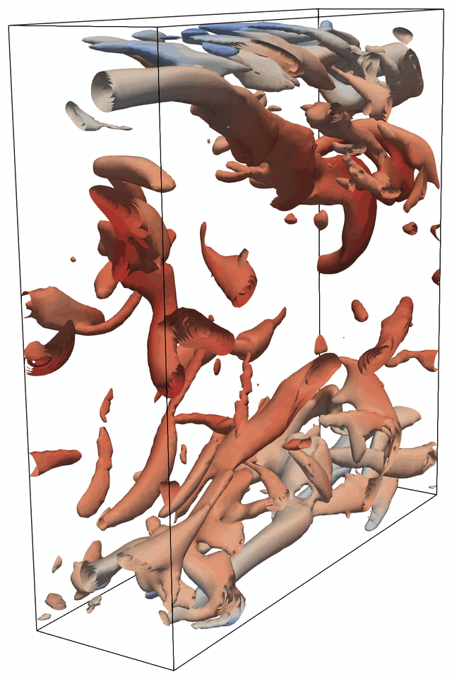
The MFU domain (0.6πh × 2h × 0.18πh): Q-criterion iso-surfaces coloured by streamwise velocity.
The framework splits the problem into two tasks: compression and forecasting. A β-VAE-GAN learns to describe each velocity field with just four latent variables. A sensor-conditioned Transformer then learns how these four variables evolve in time.
The two parts are trained one after the other. The β-VAE-GAN is trained first, on individual snapshots, with the sole objective of reconstructing the flow faithfully. Its weights are then frozen, and the Transformer is trained on the resulting latent trajectories. If both were trained together, the latent space could drift towards whatever features make the next step easiest to predict, rather than those that best represent the flow physics. Keeping the stages separate makes the latent variables a description of the turbulent structures themselves. The forecaster can also be changed or retrained without touching the compression.
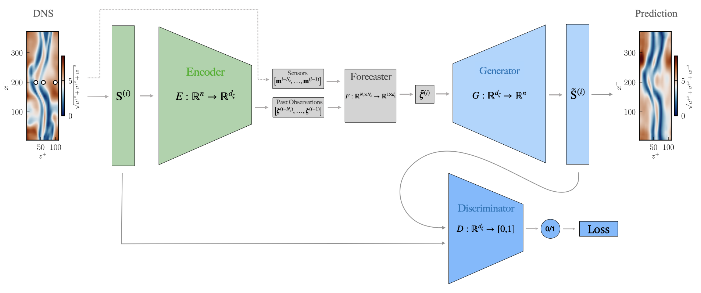
Training: the encoder, generator and discriminator are trained together as a β-VAE-GAN; the forecaster (the sensor-conditioned Transformer) is then trained on the frozen latent space. Inference: only the forecaster and the generator are used. The circles on the DNS field mark the three sensors, whose readings (dotted line) condition every forecasting step.
A convolutional β-VAE maps each 48 × 24 × 3 snapshot to dζ = 4 latent variables. The decoder also acts as the generator of a GAN, and a PatchGAN discriminator judges whether the reconstructed fields look statistically like real ones. Circular padding enforces the periodic boundary conditions.
From a context window of T = 128 past latent states, the Transformer predicts the next one and feeds it back autoregressively. Three sensors measuring (u′, v′, w′) modulate every block through AdaLN-Zero. Easy Attention replaces query-key attention with a learnt temporal mixing matrix.
The encoder is used only once, to fill the first 128 t+ window. After that, every field is decoded from the forecast latent state, with the sensor readings as the only input from the flow. The discriminator is not used at inference.
Reducing a field to a few scalars means that one reconstruction stands for many fields with the same large-scale features. With a squared-error loss, the best reconstruction is their average. The large-scale structures, which are in phase across these fields, survive the average. The small-scale fluctuations, whose phase varies from field to field, cancel out. The adversarial term counteracts this by rewarding reconstructions that are statistically consistent with real fields.
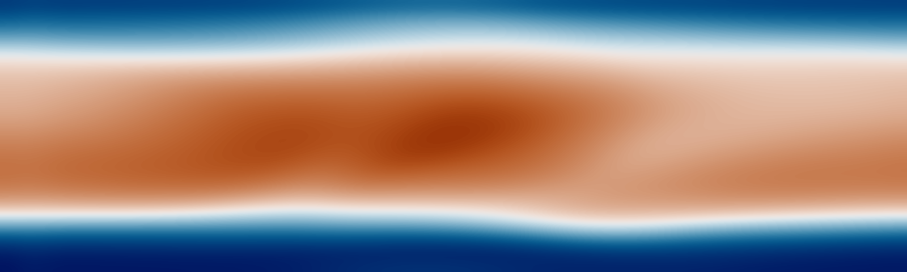
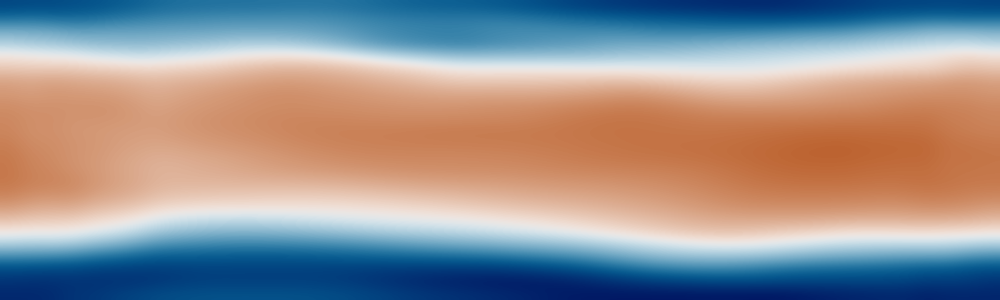
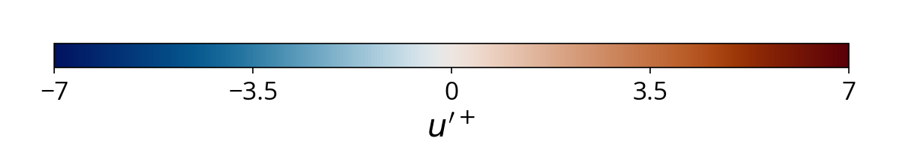
u′+ at y+ = 14 for one test snapshot. Pick a method, then drag the slider to compare it with the DNS.
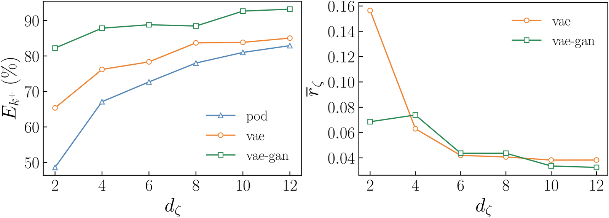
Test set, as a function of the latent dimension. Left: fraction of turbulent kinetic energy recovered, Ek+. Right: mean absolute correlation between latent variables, r̄ζ. POD is uncorrelated by construction, so it is not shown on the right.
At every latent dimension the non-linear models beat POD, and the β-VAE-GAN beats the β-VAE. The gap is largest under strong compression. At dζ = 2, POD recovers less than 60% of the test-set turbulent kinetic energy and the β-VAE less than 70%, while the β-VAE-GAN recovers more than 80%.
The higher fidelity does not cost disentanglement: the latent variables of the β-VAE-GAN are about as weakly correlated as those of the β-VAE. The spanwise autocorrelation of u′ also matches the DNS up to the zero crossing, even at dζ = 4.
| dζ = 4 | Ek+ (test) |
|---|---|
| β-VAE | 76% |
| β-VAE-GAN | 88% |
The β-VAE-GAN is trained on randomly shuffled snapshots, so it never sees time. Its four latent variables, ranked by activity, still split the time scales of the near-wall cycle:
Slow intermittency of the regeneration cycle: about 97% of their variance lies below f+ = 0.01.
Coupling between the slow evolution of the streak and the amplitude of its convected undulations.
Convective signature of the streak undulations, at a frequency set by the streamwise length of the domain.
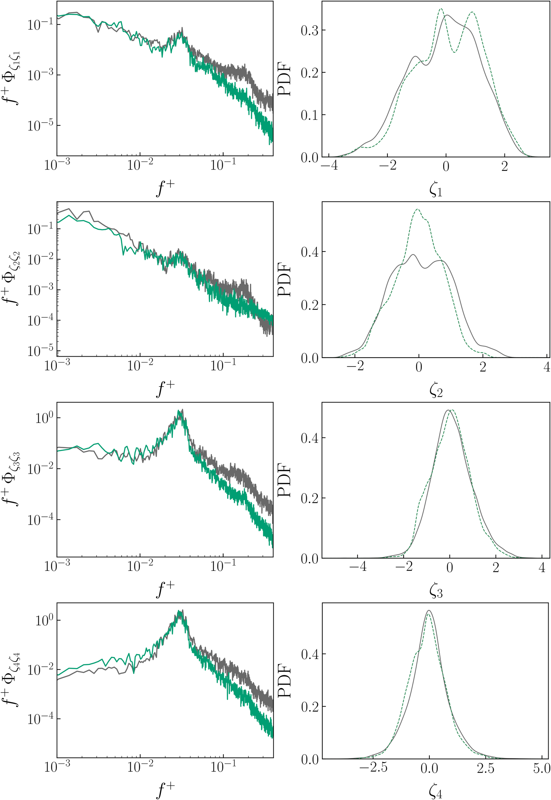
Premultiplied spectra (left) and PDFs (right) of ζ1…ζ4: Transformer forecast (sea-green) against encoded DNS (grey).
The spectral hierarchy of the latent variables follows the time scales of the flow. ζ1 and ζ2 carry the slow alternation of active and quiescent phases, and ζ4 peaks at the convective frequency of the streak undulations. The Transformer reproduces these spectra over the whole horizon. It shifts the convective peak only slightly, to T+ ≈ 33, and damps the fastest fluctuations, which carry little latent variance.
These spectra also match the DNS spectra of (−u′v′)+max and of u′+. This suggests that the latent manifold is a physically meaningful set of coordinates for the flow, and not only a statistical compression of the fields.
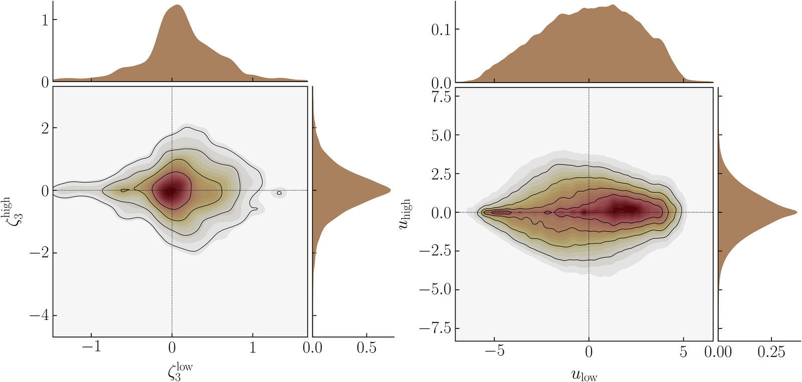
Joint PDFs of the low-pass and high-pass components of ζ3 (left) and of u′+ (right). In both, the high-frequency fluctuations shrink when the low-frequency component is strongly negative, i.e. when a coherent low-speed streak is present. ζ3 therefore encodes the coupling between the slow streak evolution and its convected undulations.
In end-to-end inference, the Transformer generates the latent trajectory and the generator decodes it into velocity fields. Over the full test horizon the model recovers 82% of the turbulent kinetic energy, against an upper bound of 88% for direct compression. The POD entropy follows the same pattern: it falls from 0.6975 to 0.6159 at the compression stage, and only to 0.6041 after forecasting. Most of the information loss therefore comes from the bottleneck, not from the Transformer.
DNS (test set)
Forecast from the three sensors
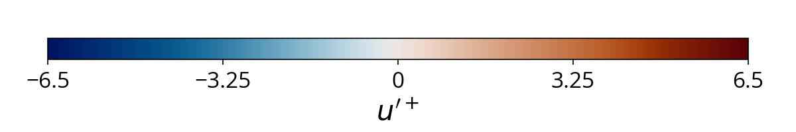
u′+ at y+ = 14, one frame per t+, more than 15,000 t+ into the autoregressive rollout. The circles mark the three sensors.
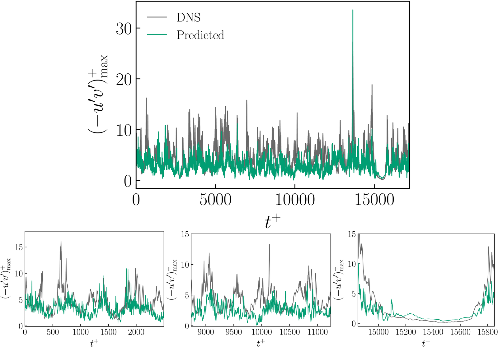
The spatial maximum of the instantaneous Reynolds shear stress rises and falls with the DNS over the whole forecast horizon. This includes the long quiescent interval near t+ ≈ 15,000, which comes more than 14,000 t+ after the model last saw a reference field.
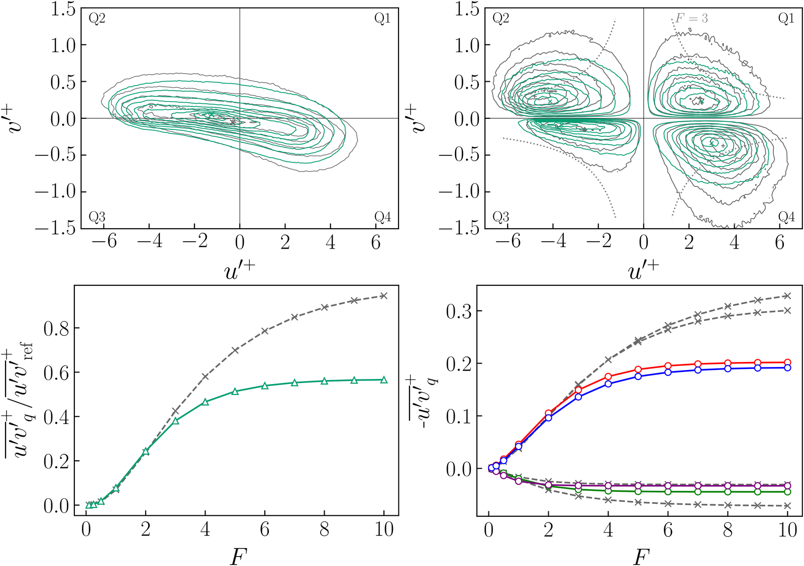
Quadrant analysis. The predicted joint PDF of (u′, v′) is elongated along the Q2–Q4 axis, as in the DNS. The model therefore captures the most frequent ejections and sweeps. The combined Reynolds shear stress follows the reference up to a hole size of F = 3.
The model under-predicts the rarest, most intense events: the peak amplitude of (−u′v′)+max is about 36% lower than in the DNS. This deficit stays constant along the rollout, so it comes from the compression stage rather than from drift in the forecast.
@article{tonioni2026minimal,
author = {Tonioni, Niccol{\`o} and Agostini, Lionel and
Sanchis-Agudo, Marcial and Umair, Mohammad and
Kerherv{\'e}, Franck and Cordier, Laurent and
Vinuesa, Ricardo},
title = {A Hybrid Generative Reduced-Order Model for the Minimal Flow Unit},
journal = {International Journal of Heat and Fluid Flow},
volume = {122},
pages = {110784},
year = {2026},
doi = {10.1016/j.ijheatfluidflow.2026.110784}
}